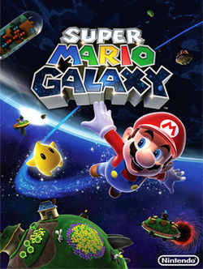
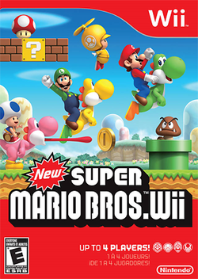
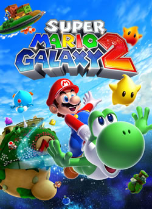

Wii

Release Date: November 12, 2007
Super Mario Galaxy was the first Super Mario Game released on the Wii. This game still had he cre fundamentals of a Mario game, but introduced some new gameplay mechanics. The biggest being the use of the Wii motion controller to control Mario in the game. It also introduced the galxy system where Mario would travel to a world in a galxy and the world would be the level itself. The actually planets ranged in size from tiny to large. While there was no Luigi co-op was still available as a second player could control a Lumia, a star like character, ho could shoot Str Bits to help protect Mario. The game was well recived by critics and consumers. It is one of the highest rated games of all-time.
Release Date: November 15, 2009
New Super Mario Bros Wii followed in the footsteps of New Super Mario Bros, on the Nintendo DS, by bringing the sereis back to the second dimension. The game also allowed up to four player co-op and a first for the series where all the players played at the same time. The first two players were Mario and Luigi respectively and then the other two were different colored Toads. The game also featured different colored Yoshiis for all the players to ride. As the number of players increase the game actually gets harder as layers can intentionally or unintenionally kill their fellow players. Thi game was also a big success. As of December 2011 the game had sold over 25 million copies.
Release Date: May 23, 2010
What do we have here? For the first time sincethe NES two Mario titles are released for the same platform. Super Mario Galaxy 2 build upon the original and once again showcases Mario trying to save Princess Peach from Bowser's clutches. Yoshi makes a return in this game. Luigi also makes an appearance. Another point of note is that this game was much more difficult than the original. So much so that Nintendo implemented a Cosmic Guide feature, a feature that has also been seen in Donkey Kong Country Returns, that lets the compuer take over and finish the level for the player. If this is used only a Bronze Star is awarded. This feature was well received as it let everyone beat the game, but the also gave the opportunity to go back to get a better score. Like every Mario game Super Mario Galaxy 2 was a success both financially and critically.
The Wii once again saw the off-shoot Mario franchises get games.
- Super Paper Mario
- Mario Party 8
- Mario Strikers Charged
- Mario & Sonic at the Olympic Games
- Super Smash Brothers Brawl
- Mario Kart Wii
- Mario Super Sluggers
- Mario Power Tennis
- Mario & Sonic at the Winter Olympic Games
- Mario Sports Mix
- Mario & Sonic at the London 2012 Olympic Games
- Mario Party 9